B35/S36: Stressful
Stressful, with the rulestring B35/S36, is a life-like cellular automoton.
Only one still life is possible(?), and only 7 oscillators have been discovered:
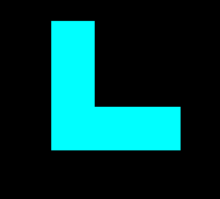
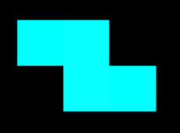
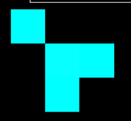
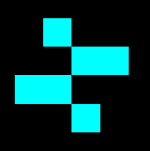
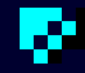
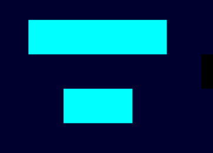
All oscillators are period 2.
B24/S3: Synthestatic (old name Jet Explosion)
Synthestatic, is a life-like cellular automoton that explodes.
It has 2 notable patterns:

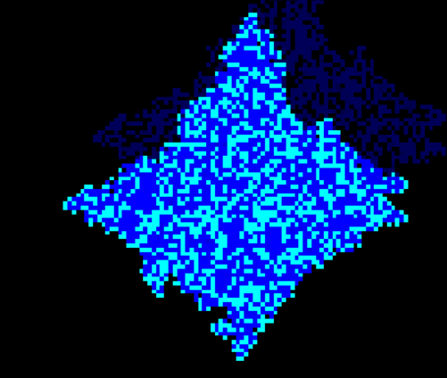
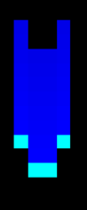
B3/12: Loaf 'n sticks
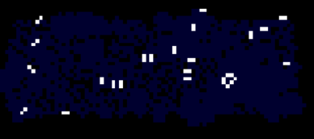
B45/S36: Conway's Game of Death (aka Stars)
Conway's Game of Death is a notable cellular automata because the ash of this rule
only includes the still life of Block.
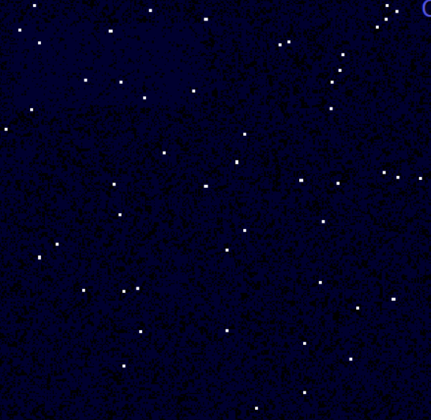
B35/342: Blaze
(undstudied)
B38/S1235: Parasite-Line
This rule is an exploding rule but it crystallizes and has glider lines growing out.
The glider lines can have parasites, that can either grow along with the line or EXPLODE the line.
Parasites are also contagious, they can go from one line to another
Another type of parasite, instead of growing on the sides, it grows in the line.
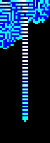
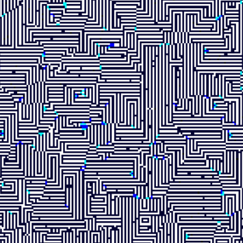
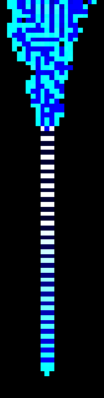
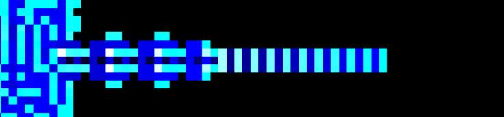